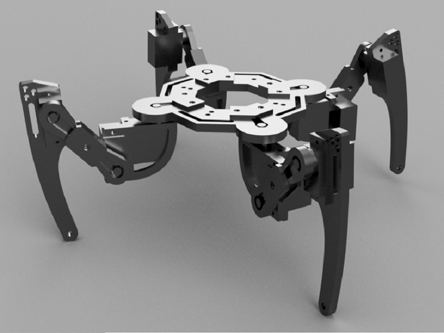
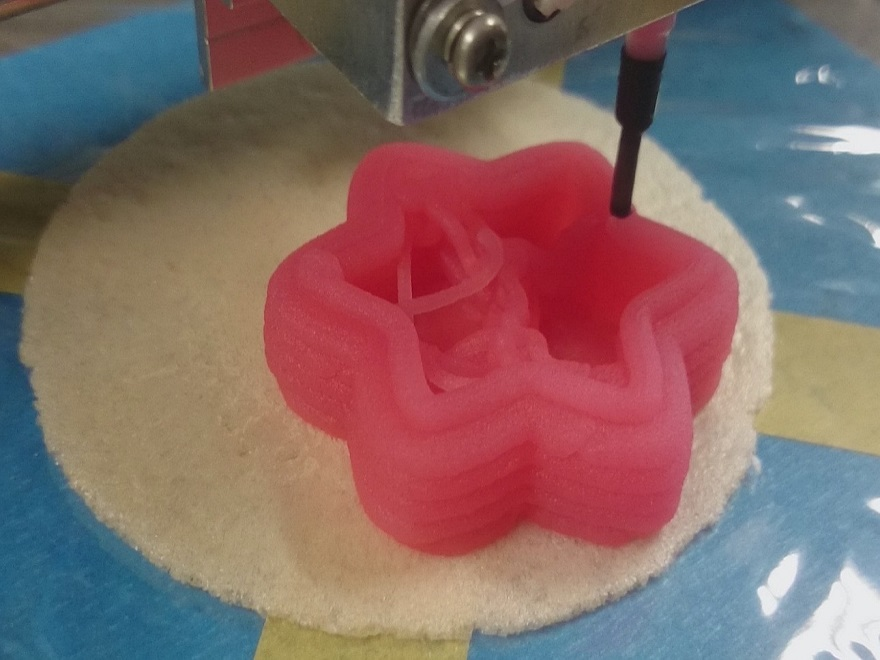

 Social Pods 2017:中高生向けSTEM教育用ロボットキットとカリキュラムの設計・実践,3D Data, Source code, 学会発表(IEICE CNR Aug. 1, Otaru, Japan)
 Montbranc:和菓子を出力する3Dフードプリンタ 2014:RepRapベースのフードプリンタ, MakerFaireTokyo2014に出展, 毎日新聞, Make:ほか, ガジェット通信, MONOist, スーパーニュース等で掲載,紹介